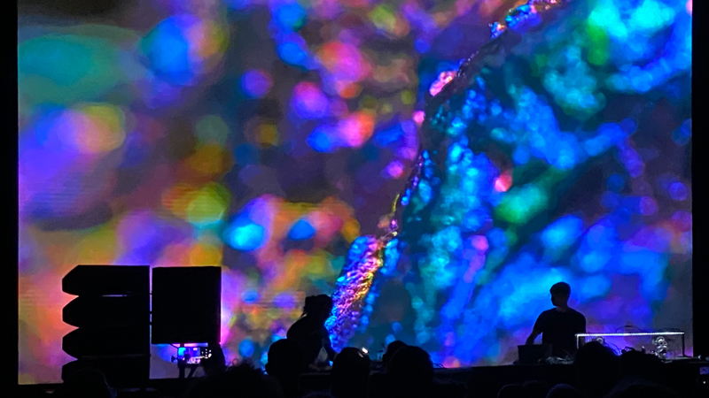
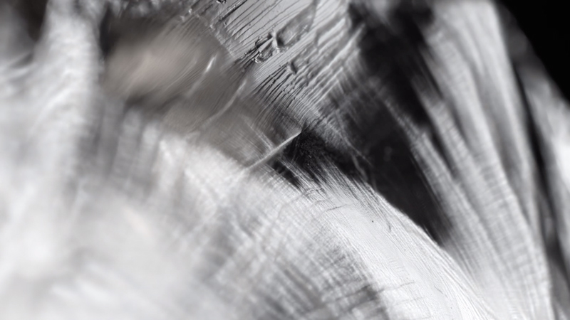
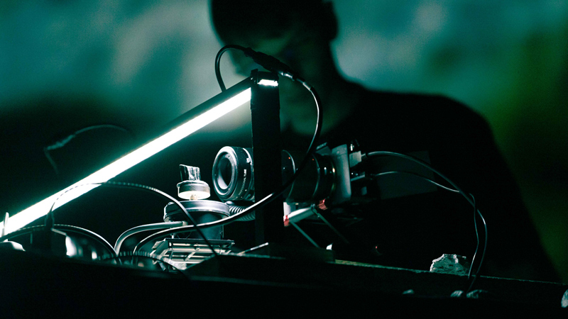

NATI INFINITI - live A/V
A live performed audio-visual piece
Music by Alessandro Cortini
Live visual art by Marco Ciceri

In 2022, Sonar Lisboa saw the debut of Alessandro Cortini’s “Nati Infiniti.” This was his first foray into installation work: An immersive audio installation spread over the four floors of Museu de Lisboa’s “Fábrica de Moagem” [The Moagem Building], an old flour factory with intact antique machinery. The installation featured architectural lighting that responded to the sounds he created centered around ‘Strega,’ the instrument Cortini co-designed with Make Noise, with each floor evoking a distinct state, with the entire installation being seen in its eternity from the top floor. “Nati Infiniti” was created in an infinite nonlinear fashion and constantly evolved over carefully selected parameters.
For 2023’s Berlin Atonal, Cortini debuted his live improvisational version of “Nati Infiniti.” He reimagines this piece into a unique, evolving dialogue via an audio-visual show designed together with, and by, Marco Ciceri. This concept highlights the interconnectedness of all things and invites us to embrace our own transformative power. Utilizing the infinite life of minerals reveals a world where they constantly grow, evolve, and interact. They are not just physical objects but embody the universe's boundless potential. Nati Infiniti has been performed across a series of sold-out performances world-wide - each showcasing an improvised version of Nati Infiniti with no two concerts ever the same.




UPCOMING SHOWS
PAST SHOWS
Sonica - Glasgow - UK
Nextones - Val D’Ossola - Italy
Takeover - Athens - Greece
Atonal - Berlin - Germany
Mutek - Montreal - Canada

2023